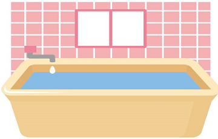

①じゃがいもが溶けたカレー
にんじん、じゃがいも、たまねき、牛肉を具材にしてカレーを1kg作ろうとしていました。ところが、火加減を間違えて煮込んでしまったため、じゃがいもが全て溶けてしまいました。カレーはどれだけできるでしょうか。（じゃがいもが溶けてしまったこと以外による具材の変化および沸騰による水の減少は考慮しないとします。）
（解説）じゃがいもの量に関わらずカレーは必ず1kgできます。じゃがいもの状態が変化しても量（厳密には質量といいます）は変化しないためです。このためじゃがいもが溶けてもカレーの量（質量）は減少しません。
②お風呂のお湯を冷ますのに必要な水量
お風呂に入ろうと浴槽にお湯を入れていました。80Lのお湯を入れ終わったところで50℃の高温のお湯を入れていたことに気づき、20℃の水で自分の適温まで冷やすことにしました。冷水は何L必要でしょうか。（蒸発によるお湯の減少は考慮しないとします。）

（解説）詳細な計算式はここでは省略します。この問題を解くためには熱の移動について知っておく必要があります。お湯が水よりも温度が高いのはお湯の方が持っている熱が多いためです。お湯の中に水を入れるとお湯が持っている熱が水に移動し、これにより水の温度が上昇します。この熱の移動量はお湯の温度変化に比例します（例えば60℃のお湯が50℃になるときよりも30℃になるときの方が熱の移動量は大きくなります）。そしてお湯が奪われた熱量と水が奪った熱量は等しくなります。この法則から必要な水量を求めます。